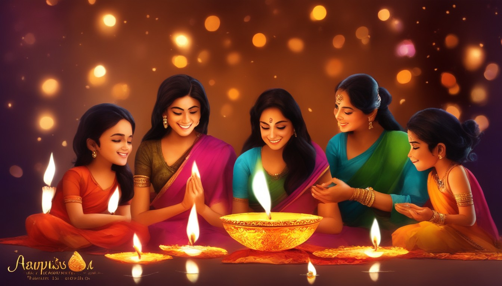
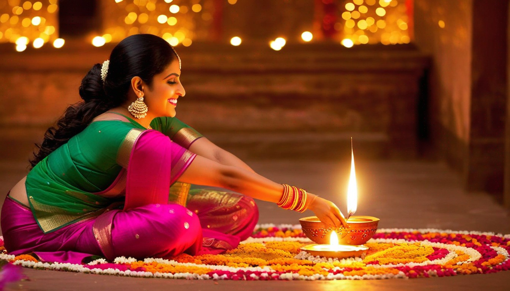
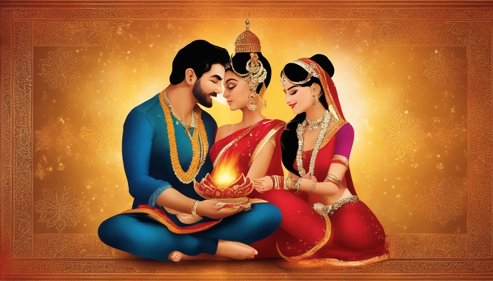

I pray that God grants you good fortune, prosperity, and peace on this Diwali. Happy Diwali to you and your family.
  
"May the festival of lights brighten up your life with joy and prosperity. Happy Diwali!"
"Wishing you a Diwali filled with love, light, and laughter."
"Let the light of Diyas illuminate your life with endless joy and happiness."
"May this Diwali bring success to your doorstep and illuminate your path towards progress."
"May the divine light of Diwali spread into your life peace, prosperity, happiness, and good
health."
"Wishing you a sparkling Diwali filled with joy and blessings."
"May the festival of lights usher in a world of radiance and illuminate your spirit with
joy."
"As you celebrate Diwali, may you be blessed with immense wealth, health, and happiness."
"Diwali is the time to celebrate the victory of light over darkness. May this festival fill your
life
with brightness and hope."
"On this auspicious festival of lights, may the glow of joy, prosperity, and happiness illuminate
your
days in the year ahead."
"May the festival of lights bring endless joy and happiness to your life. Happy Diwali!"
"Wishing you a Diwali that brings new beginnings and new successes in your life."
"May the beauty of Diwali fill your home with happiness, and may the coming year provide you with
everything that brings you joy!"
"Wishing you a Diwali that's as bright as your smile."
"May the festival of lights brighten your life and bring you happiness, prosperity, and
joy."
"May the divine light of Diwali spread peace, prosperity, and good health in your life."
"May the joyous celebration of this divine festival fill your heart with never-ending joy and
happiness!"
"May the festival of lights illuminate your life with happiness, health, and prosperity."
"Wishing you a Diwali filled with love, light, and laughter."
"May the festival of lights bring peace, prosperity, and happiness to your life."
"As you celebrate Diwali, may you be blessed with success, prosperity, and happiness."
"May the festival of lights brighten up your life with happiness and success."
"Wishing you a Diwali filled with love, joy, and prosperity."
"May the festival of lights bring warmth and light to your life."
"May the joyous celebration of Diwali fill your heart with love and happiness."
"Wishing you a Diwali that's as bright as the lights on the diyas."
"May the festival of lights illuminate your life with joy and prosperity."
"Wishing you a Diwali filled with happiness, health, and prosperity."
"May the festival of lights brighten up your life with love and joy."
"May the divine light of Diwali bring peace, happiness, and prosperity to your life."
"Wishing you a Diwali filled with love, joy, and prosperity."
"May the festival of lights bring warmth and light to your life."
"Wishing you a Diwali filled with love, joy, and prosperity."
"May the festival of lights brighten up your life with happiness and success."
"May the joyous celebration of Diwali fill your heart with love and happiness."
"Wishing you a Diwali that's as bright as the lights on the diyas."
"May the festival of lights illuminate your life with joy and prosperity."
"Wishing you a Diwali filled with happiness, health, and prosperity."
"May the festival of lights brighten up your life with love and joy."
"May the divine light of Diwali bring peace, happiness, and prosperity to your life."
"Wishing you a Diwali filled with love, joy, and prosperity."
"May the festival of lights bring warmth and light to your life."
"Wishing you a Diwali filled with love, joy, and prosperity."
"May the festival of lights brighten up your life with happiness and success."
"May the joyous celebration of Diwali fill your heart with love and happiness."
"Wishing you a Diwali that's as bright as the lights on the diyas."
"May the festival of lights illuminate your life with joy and prosperity."
"Wishing you a Diwali filled with happiness, health, and prosperity."
"May the festival of lights brighten up your life with love and joy."
"May the divine light of Diwali bring peace, happiness, and prosperity to your life."
"Wishing you a Diwali filled with love, joy, and prosperity."
"May the festival of lights bring warmth and light to your life."
"Wishing you a Diwali filled with love, joy, and prosperity."
"May the festival of lights brighten up your life with happiness and success."
"May the joyous celebration of Diwali fill your heart with love and happiness."
"Wishing you a Diwali that's as bright as the lights on the diyas."
"May the festival of lights illuminate your life with joy and prosperity."
"Wishing you a Diwali filled with happiness, health, and prosperity."
"May the festival of lights brighten up your life with love and joy."
"May the divine light of Diwali bring peace, happiness, and prosperity to your life."
"Wishing you a Diwali filled with love, joy, and prosperity."
"May the festival of lights bring warmth and light to your life."
"Wishing you a Diwali filled with love, joy, and prosperity."
"May the festival of lights brighten up your life with happiness and success."
"May the joyous celebration of Diwali fill your heart with love and happiness."
"Wishing you a Diwali that's as bright as the lights on the diyas."
"May the festival of lights illuminate your life with joy and prosperity."
"Wishing you a Diwali filled with happiness, health, and prosperity."
"May the festival of lights brighten up your life with love and joy."
"May the divine light of Diwali bring peace, happiness, and prosperity to your life."
"Wishing you a Diwali filled with love, joy, and prosperity."
"May the festival of lights bring warmth and light to your life."
"Wishing you a Diwali filled with love, joy, and prosperity."
"May the festival of lights brighten up your life with happiness and success."
"May the joyous celebration of Diwali fill your heart with love and happiness."
"Wishing you a Diwali that's as bright as the lights on the diyas."
"May the festival of lights illuminate your life with joy and prosperity."
Deepawali, commonly known as Diwali, is a Hindu festival widely celebrated in India and other parts of
the world. It is one of the most important and popular festivals in Hinduism. The word "Diwali" is
derived from the Sanskrit word "Deepavali," which means a row of lights. The festival usually lasts five
days and is marked by various rituals, decorations, and the lighting of oil lamps or diyas.
Diwali signifies the victory of light over darkness and good over evil. The celebration is associated
with various mythological stories, the most well-known being the return of Lord Rama to Ayodhya after
defeating the demon king Ravana. People celebrate Diwali by cleaning and decorating their homes,
lighting lamps, bursting fireworks, exchanging gifts, and preparing festive meals.
Diwali, or Deepawali, is celebrated for various reasons, and the significance may vary among different
regions and communities. Here are some of the common reasons and themes associated with the celebration of
Diwali:
1. Victory of Light over Darkness: Diwali symbolizes the victory of light over darkness and good over
evil. This theme is often associated with the legend of Lord Rama, who returned to his kingdom of Ayodhya
after defeating the demon king Ravana. The people of Ayodhya lit oil lamps to welcome him back, and this
tradition is believed to be the origin of the custom of lighting lamps during Diwali.
2. Goddess Lakshmi's Blessings: Diwali is also dedicated to the worship of Goddess Lakshmi, the Hindu
goddess of wealth and prosperity. It is believed that Goddess Lakshmi visits homes that are clean and
well-lit, bringing prosperity and good fortune. People pray for her blessings and wealth during Diwali.
3. New Year in some regions: In some parts of India, Diwali marks the beginning of the new year.
People
clean and decorate their homes, buy new clothes, and make offerings to start the year on an auspicious note.
4. Celebration of Relationships: Diwali is a time for families to come together, exchange gifts, and
celebrate their relationships. It is a time of joy, unity, and strengthening familial bonds.
5. Cultural and Social Significance: Diwali is not only a religious festival but also holds cultural
and
social significance. It is a time when people decorate their homes, create intricate rangoli designs,
exchange sweets, and participate in various cultural events and festivities.
The celebration of Diwali involves several rituals and customs that vary across different regions and
communities. Here is a general overview of the common procedures and practices associated with Diwali:
1.Decoration: Weeks before Diwali, people clean and decorate their homes. Cleaning
symbolizes the removal of negativity and the preparation for the arrival of Goddess Lakshmi. Homes are
decorated with colorful rangoli (artistic patterns made on the floor), diyas (oil lamps), candles, and
electric lights.
2.Shopping: Diwali is a time for shopping, and people buy new clothes, jewelry, and household items.
It
is considered auspicious to make significant purchases during this time.
3.Dhanteras: Diwali festivities often begin with Dhanteras, which falls two days before Diwali. On
this
day, people worship Lord Dhanvantari (the physician of the gods) and Goddess Lakshmi. It is also customary
to buy gold, silver, or new utensils on Dhanteras.
4.Choti Diwali/Narak Chaturdashi: The day before Diwali is known as Choti Diwali or Narak
Chaturdashi.
It commemorates the victory of Lord Krishna over the demon Narakasura. People take an oil bath before
sunrise, light lamps, and burst fireworks.
5.Main Diwali Day: On the day of Diwali, people wake up early, take a ritual oil bath, and wear new
clothes. In the evening, families gather for Lakshmi Puja, a worship ceremony dedicated to Goddess Lakshmi.
The puja involves lighting lamps, offering prayers, and seeking the blessings of the goddess for prosperity
and wealth. Many people also worship Lord Ganesha, the remover of obstacles, during this time.
6.Fireworks and Lighting: The night of Diwali is associated with the bursting of fireworks. The idea
is
to drive away evil spirits with the noise and light. However, in recent years, there has been a growing
awareness of the environmental impact of fireworks, leading some people to opt for more eco-friendly
celebrations.
7.Exchanging Gifts and Sweets: Families and friends exchange gifts and sweets as a symbol of love and
goodwill. It is a time for strengthening relationships and expressing gratitude.
8.Feasting: Diwali is a time for delicious food. Families prepare special meals and sweets, and the
feasting continues throughout the festival.
We would like to express our gratitude to Gnanamani College of Technology for their sponsorship and support.
Contact: Gnanamani College of Technology
Email: info@gct.org.in
For More Detail Visit The College Website : Click Here
Name: Ganpat Kumar
Email:ganpatstudy@gmail.com
Phone: +91995565243>
Facebook: Facebook
page
Instagram: Instagram
Linkedln: Linkedln